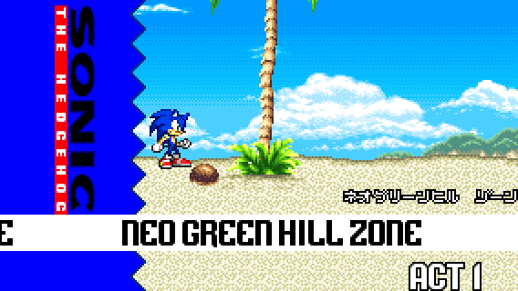
Location: Neo Green Hill Zone Act 1
Difficulty: Easy
If you play as Tails, you can skip to [RECOVERY 2].


Location: Neo Green Hill Zone Act 1
Difficulty: Easy
If you play as Tails, you can skip to [RECOVERY 2].
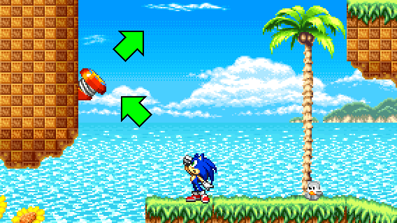
STEP 1:
After the second checkpoint, you will encounter a Kiki badnik hanging on a tree. On his left is a diagonal spring. Jump on it to go to the path above.
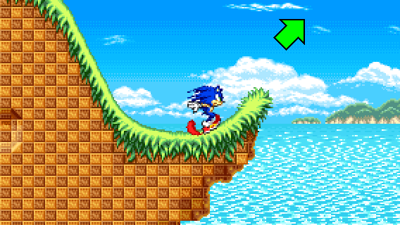
STEP 2:
Then, after traversing a loop and and a vertical uphill slope, you have to launch yourself from a hill.
When launched, make sure to land on top of a loop by following the rings and don't get hit by the spikes.
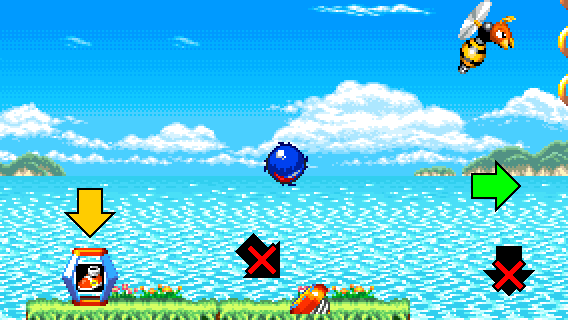
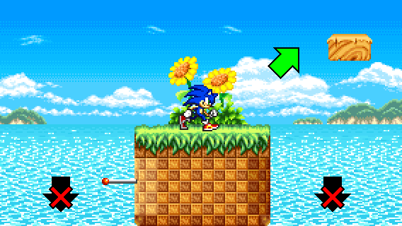
STEP 3:
Once on top of a loop, jump your way on the second loop, a floating hill and a bouncing platform to go up. Be careful not to fall!
You can take the High-Speed Boots item, in case if you fall off.
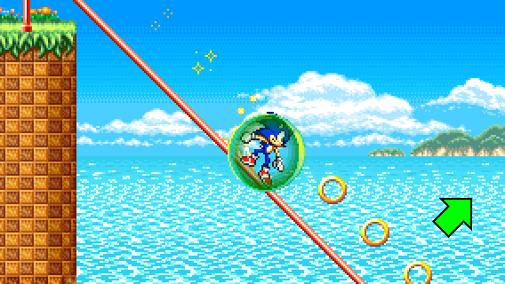
STEP 4:
After encountering a Barrier item and a Rhinotank badnik, you'll come across a rail.
As Sonic or Amy, jump on the rail and grind until at one point so you can land on a flat hill with a yellow spring.
As Tails or Knuckles, you can fly or glide your way to the flat hill with a yellow spring.
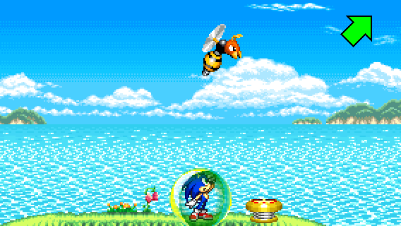
STEP 5:
Once landing on that flat hill, jump on the yellow spring and move to the right until to land on a small moving platform.
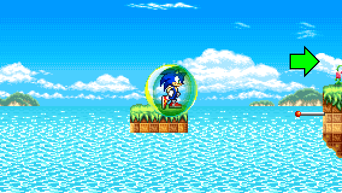
STEP 6:
Finally, on the small moving platform, jump on the pole so you can land on a floating hill.
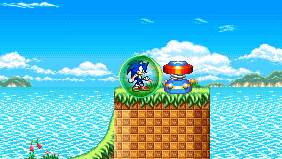
And voila! You found the Special Spring location!
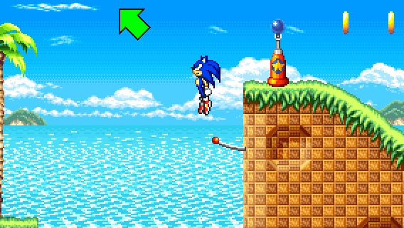
RECOVERY 1:
If you fell off during STEP 3, but have the High-Speed Boots item equipped, you can go back up by taking a pole before the last checkpoint and hold left until you land on the floating hill.
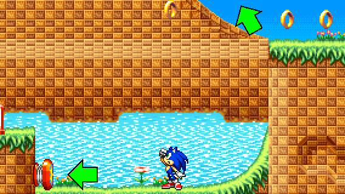
RECOVERY 2:
If you grind too long during STEP 4 or fell off during STEP 5, you can land back on the flat hill by taking the red spring below and launch yourself upwards to the left from the vertical uphill slope. This step is easier when you have the High-Speed Boots item equipped.
If you play as Tails, you can fly directly to the small moving platform above.